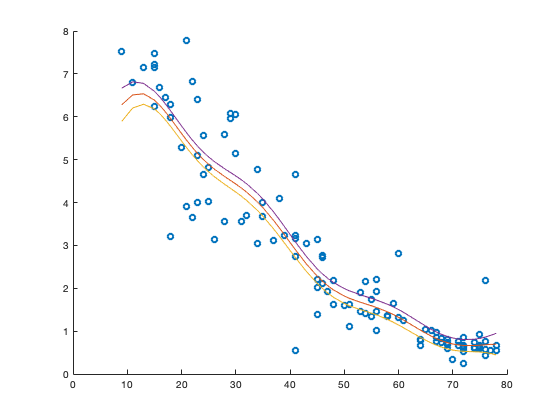

POINTWISE POSTERIOR
The below includes the main function plotting the posterior mean and the confidence intervals for a given data where the posterior distribution is modelled as Gaussian Process
clear; %Data Reading and Initial Clearing data = csvread('utilities.csv',1,0); x = data(:,1); y = data(:,2)./data(:,3); %bill per day [x, idx] = sort(x); y = y(idx); %Parameter setting and Gaussian Fitting b = 10; tau1sq = 1; tau2sq = 1e-6; sigma = 0.2; xstar = sort(x); covFunc = @CovSqExp; res = gp_predict(x, y, xstar, covFunc, b, tau1sq, tau2sq, sigma); sigma_new = sum( (res.mean - y).^2 ) / (length(y) - 1); res_new = gp_predict(x, y, xstar, @CovSqExp, b, tau1sq, tau2sq, sigma_new);
%Plotting figure(1); scatter(x, y); hold on; plot(xstar, res_new.mean); sigmas = sqrt(diag(res_new.var)); CI_lb = res_new.mean - sigmas; CI_ub = res_new.mean + sigmas; hold on; plot(xstar, CI_lb); hold on; plot(xstar, CI_ub);
GP Function Definition
function res = gp_predict(x, y, xstar, covFunc, b, Tau1sq, Tau2sq, sigma) %Determine whether x is a vector or a matrix to determine the %dimensionality of the given data. if ~isvector(x) n1 = size(x,2); else n1 = length(x); end if ~isvector(xstar) n2 = size(xstar,2); else n2 = length(xstar); end %Calculate covariance matrixes where C is the covariance for observed %data; Cx is the covariance between the observed and prediction data %and Cxx is the covariance matrix between unobserved (prediction) data %input. for i = 1:n1 for j = 1:n1 C(i,j) = covFunc(x(i), x(j), b, Tau1sq, Tau2sq); end end for i = 1:n1 for j = 1:n2 Cx(i,j) = covFunc(x(i), xstar(j), b, Tau1sq, Tau2sq); end end CxT = transpose(Cx); for i = 1:n2 for j = 1:n2 Cxx(i,j) = covFunc(xstar(i), xstar(j), b, Tau1sq, Tau2sq); end end %Implement posterior solution for noisy observation. sigma shall be %zero if the observations are noise-free. noise = sigma*eye(n1); post_mean = CxT / (C + noise) * y; post_var = Cxx - (CxT / (C + noise)) * Cx; res.mean = post_mean; res.var = post_var; end
Covariance Functions
function res = CovSqExp(x1, x2, b, tau1sq, tau2sq) dist = norm(x1 - x2); kronecker = isequal(x1, x2); res = tau1sq * exp( -0.5 * (dist/b)^2 ) + tau2sq *kronecker; end function res = CovMat52(x1, x2, b, tau1sq, tau2sq) dist = norm(x1 - x2); kronecker = isequal(x1, x2); expterm = exp(-sqrt(5)*dist/b); taylorterm = 1 + sqrt(5)*dist/b + 5 * dist^2/(3*b^2); res = tau1sq*taylorterm*expterm + tau2sq*kronecker; end